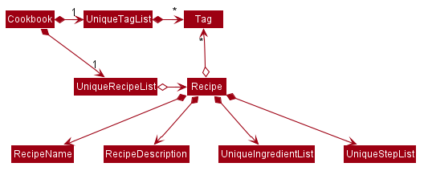

Overview
Cooking Papa is a desktop cookbook application used to manage recipes and ingredients for cooking. It consists of a Cookbook containing recipes, an Inventory containing a users ingredients, and a Cart containing ingredients that a user needs to buy. The user interacts with it using a CLI, and it has a GUI created with JavaFX. It is written in Java, and has about 15 kLoC.
Summary of contributions
-
Major enhancement: added the ability to search for recipes based on the ingredients in the inventory
-
What it does: allows the user to find recipes that match the inventory ingredients best, sorted by the similarity to the inventory ingredients.
-
Justification: This feature improves the product significantly because a user may not know what to cook with their ingredients, and the app should provide a convenient way to find the most suitable recipes to cook with the available ingredients.
-
Highlights: This enhancement required an in-depth analysis of design alternatives. The implementation too was challenging as it required a robust way of handling ingredient quantities.
-
Credits: Apache Commons Math (The
Fractionclass was used in implementing ingredient quantities)
-
-
Other enhancements:
-
Contributed to basic features involving ingredients, including adding and removing ingredients from recipes, and the inventory and cart
-
Contributed to a feature that added the ability to add ingredients from a recipe to the cart when a user wants get ingredients for a new recipe
-
Contributed to a feature that added the ability to move ingredients from the cart to the inventory after a user has finished shopping
-
-
Code contributed: Link
-
Other contributions:
-
Project management:
-
Helped the team to set up and maintain the forking workflow in this project
-
Managed the milestones
v1.2andv1.3on Github
-
-
Enhancements to existing features:
-
Handled arithmetic of ingredient quantities to allow adding and removing ingredients with the same units (Pull request #60)
-
Set up the structure of the new commands and parsers (Pull request #82)
-
Integrated new classes to the architecture components of the app (Pull requests #96, #114)
-
Wrote tests for the
InventoryandCart, as well asIngredient-related code in the Model(Pull requests #60, #78, #230) -
Fixed a major GUI bug that caused Linux users not to be able to see the components of the app window properly (Pull request #234)
-
-
Documentation:
-
Wrote the Recipe Commands section and the Edit Recipe Commands section of the user guide
-
Updated UML class diagrams of the
Logic,ModelandStoragecomponents from the Address Book Level 3 diagrams in the developer guide -
Added manual testing instructions for adding and removing ingredients in a recipe
-
Added user stories
-
-
Community:
-
Tools:
-
Integrated a third-party library, Apache Commons Math, to the project (#60)
-
-
Contributions to the User Guide
Given below are sections I contributed to the User Guide. They showcase my ability to write documentation targeting end-users. |
Recipe Commands (by Goh Ka Hui)
Recipe commands are commands that change an existing recipe in the cookbook, which can be indicated using the index of the recipe. You can use these commands to to add and remove ingredients or steps from a recipe in the cookbook. You may also tag your recipes to make it easier for you to find them.
Add an ingredient to a recipe
This command allows you to add ingredients to an existing recipe in the cookbook.
You can increase the quantity of an ingredient that is already in the recipe, as long as you provide a quantity with the same unit. Otherwise, Cooking Papa will not add the ingredient.
Ingredient quantities are case-sensitive, but ingredient names are not, when you adding to an existing ingredient in a recipe. If you indicate multiple ingredient names or quantities, Cooking Papa will only add an ingredient with the last name and quantity indicated in your command.
-
Format:
recipe INDEX add ingredient i/INGREDIENT q/QUANTITY -
Examples:
| Command | Result |
|---|---|
|
Adds 3 cloves of garlic to the first recipe’s list of ingredients. |
|
Adds 2 eggs to the second recipe’s list of ingredients. |
Remove an ingredient from a recipe
This command allows you to remove ingredients from an existing recipe in the cookbook.
If you wish to remove an ingredient from the recipe entirely, do not indicate any quantity. Cooking Papa will then remove all of the specified ingredient from the recipe.
If you want to reduce the quantity of an ingredient that is already in the recipe, provide a quantity with the same unit as in the recipe. The value must be less than that of the corresponding ingredient in the recipe. Otherwise, Cooking Papa will not remove the ingredient.
-
Format:
recipe INDEX remove ingredient i/INGREDIENT [q/QUANTITY] -
Examples:
| Command | Result |
|---|---|
|
Removes all eggs from the list of ingredients in recipe 1. |
|
Removes 200 ml of milk from the list of ingredients in recipe 2, provided that the original quantity of milk in the recipe is greater than 200 ml. |
Add a preparation step to a recipe
This command allows you to add a step to an existing recipe in the cookbook.
For this command, you have to specify the index of the step that you wish to add, which must be positive, and at most 1 more than the current number of steps currently in your chosen recipe. For example, if there are currently 5 steps in the recipe you are trying to add to, you can only choose an index from 1 to 6.
This command pushes back the original step at your specified step index and any subsequent steps, if any.
You can use next as a substitute for the largest possible step index, to add a step to the end of the selected recipe’s list of steps.
-
Format:
recipe INDEX add step x/STEP_INDEX s/STEP_DESCRIPTION -
Example:
| Command | Result |
|---|---|
|
Adds "Bring water to boil." to recipe 1 as the first step. |
|
Adds "Serve the pasta topped with the remaining cheese." to recipe 1 as the last step. |
Remove a preparation step from a recipe
This command allows you to remove a step to an existing recipe in the cookbook.
Similar to the previous command, you have to specify the index of the step that you wish to add, which must be positive, and at most 1 more than the current number of steps currently in your chosen recipe.
In this case, you cannot use next as a substitute for the largest step index.
-
Format:
recipe INDEX remove step x/STEP_INDEX -
Example:
| Command | Result |
|---|---|
|
Removes step 1 in recipe 1. |
Add a tag to a recipe
This command allows you to add a tag to an existing recipe in the cookbook. Only one tag is accepted at a time. If you provide multiple steps, Cooking Papa will only add the last tag in your command.
-
Format:
recipe INDEX add tag t/TAG -
Example:
| Command | Result |
|---|---|
|
Adds a tag "Pasta" to the recipe 1. |
Remove a tag from a recipe
This command allows you to remove a tag from an existing recipe in the cookbook. Only one tag is accepted at a time. If you provide multiple steps, Cooking Papa will only remove the last tag in your command.
-
Format:
recipe INDEX remove tag t/TAG -
Example:
| Command | Result |
|---|---|
|
Removes the tag "Spicy" from the recipe 1. |
Example Scenario
With all these recipe commands, you are equipped to modify any recipe in the cookbook to your liking!
Below outlines a scenario where you might find these commands useful.
Imagine that you have just added a new recipe for instant ramen via the cookbook add recipe command, which now has the
index 3.

You have provided the name and description for the recipe, but have yet to add ingredients and steps to the recipe. Here are the steps you can follow to modify the recipe:
Step 1: To add an ingredient to the instant ramen recipe, type recipe 3 add ingredient i/Instant ramen q/1 packet into the command box and press Enter on the keyboard.
Cooking Papa indicates that cucumber has been added to the recipe.

Step 2: Repeat step 1 for all the ingredients you need for the instant ramen.
Step 3: To add the first step the instant ramen recipe, type recipe 3 add step x/next s/Add the oil, garlic, and ginger to a small sauce pot and saute over medium for about one minute. into the command box and press Enter on the keyboard.
Cooking Papa indicates that the new step has been added to the recipe.


Step 4: Repeat step 3 for all the steps, following chronological order.
Step 5: After adding the ingredients and steps, you can also add tags to the recipe so that you can search for it easily in future.
Type recipe 3 add tag t/Easy t/Healthy to add the tags "Easy" and "Healthy" to the recipe. Upon pressing Enter,
Cooking Papa indicates that the tags have been added.

Step 6: The recipe is finally ready for use. Type cookbook view recipe 3 into the command box to view the recipe and and press Enter.
Cooking Papa shows the full recipe for instant ramen, and you can now use it to prepare your meal.

Step 7: After trying the recipe, if you find that there was too much of ginger for your liking,
type recipe 3 remove ingredient i/Grated ginger q/1/2 tsp into the command box and press Enter to remove half a teaspoon of grated ginger from the recipe.
Cooking Papa indicates that half a teaspoon of grated ginger has been removed from the recipe.


Edit Recipe Commands [v2.0] (by Goh Ka Hui)
The following commands allow you to edit the details of the recipes that are currently in the cookbook.
Edit an ingredient in a recipe
This command allows you to edit an ingredient in an existing recipe in the cookbook. It replaces the original quantity of the ingredient with the new quantity that you specify in the command.
-
Format:
recipe INDEX edit i/INGREDIENT q/QUANTITY -
Examples:
| Command | Result |
|---|---|
|
Changes the quantity of eggs to 2 in the first recipe’s list of ingredients. |
|
Changes the quantity of milk to 100 ml in the second recipe’s list of ingredients. |
Edit a preparation step in a recipe
This command allows you to edit a step in an existing recipe in the cookbook.
-
Format:
recipe INDEX edit step x/STEP_INDEX s/STEP_DESCRIPTION -
Example:
| Command | Result |
|---|---|
|
Changes preparation step 2 to 'Fry the eggs' in recipe 1 |
Contributions to the Developer Guide
Given below are sections I contributed to the Developer Guide. They showcase my ability to write technical documentation and the technical depth of my contributions to the project. |
Logic component (by Goh Ka Hui)
API :
Logic.java
-
Logicuses theCookingPapaParserclass to parse the user command. -
This results in a
Commandobject which is executed by theLogicManager. -
The command execution can affect the
Model(e.g. adding a recipe). -
The result of the command execution is encapsulated as a
CommandResultobject which is passed back to theUi. -
In addition, the
CommandResultobject can also instruct theUito perform certain actions, such as displaying help to the user.
Given below is the Sequence Diagram for interactions within the Logic component for the execute("cookbook remove recipe 2") API call.

cookbook remove recipe 2 commandModel component (by Goh Ka Hui)
API : Model.java
The Model,
-
stores a
UserPrefobject that represents the user’s preferences. -
stores the Cookbook data.
-
exposes an unmodifiable
ObservableList<Recipe>that can be 'observed' e.g. the UI can be bound to this list so that the UI automatically updates when the data in the list change. -
stores the Inventory and Cart data.
-
exposes an unmodifiable
ObservableList<Recipe>each for both Inventory and Cart, that can be 'observed' e.g. the UI can be bound to this list so that the UI automatically updates when the data in the list change. -
does not depend on any of the other three components.
As a more OOP model, we can store a Tag list in Cookbook, which Recipe can reference. This would allow Cookbook to only require one Tag object per unique Tag, instead of each Recipe needing their own Tag object. An example of how such a model may look like is given below. |
Storage component (by Goh Ka Hui)

API : Storage.java
The Storage component,
-
can save
UserPrefobjects in json format and read it back. -
can save
Cookbookdata in json format and read it back. -
can save
Inventorydata in json format and read it back. -
can save
Cartdata in json format and read it back. === Search for recipes based on ingredients in the inventory (by Goh Ka Hui) The user may use this command to search for recipes that they can cook using the ingredients available in their inventory.
Implementation reasoning
This command was implemented to address the users' need of easily finding a recipe based on the ingredients they have
. It
allows users to whip up a meal without having to go grocery shopping if they are short of time. This feature sorts
recipes by how much the inventory fulfils their ingredient requirements, and filters out recipes whose ingredient
requirements are not met at all. Users can immediately see at the top of the cookbook the recipes that their ingredients
are most suitable for preparing. A user can use this feature by typing the command: cookbook search inventory.
Implementation
The comparison between the ingredients a recipe requires and the ingredients in the inventory is facilitated by the
RecipeInventoryIngredientsSimilarityComparator. It extends Comparator<Recipe> and stores the inventory being used
for ingredient comparison. Additionally, it implements the method calculateSimilarity(), which accepts a Recipe and
a ReadOnlyInventory as parameters, and returns a double value between 0 and 1 (both inclusive) that represents the
proportion of the recipe’s ingredient requirements that are fulfilled.
The following class diagram summarizes how the RecipeInventoryIngredientsSimilarityComparator interacts with Recipe
and Inventory:
The calculateSimilarity() method first calculates the proportion of ingredient quantity fulfilled by the inventory
for each ingredient that the recipe requires. For example, if one of the ingredients required by a recipe is 4 eggs
and the inventory contains 2 eggs, the proportion fulfilled for this particular ingredient is 0.5. This is done for
all the ingredients in the recipe. If the units of an ingredient in the recipe does not match that of the same
ingredient in the inventory, the proportion will be set at 0.5 by default. An example is when the recipe requires
1 cup flour and the inventory contains 200 g flour.
When the proportion fulfilled has been calculated for each ingredient, the values for each ingredient are summed up and
divided by the number of ingredients to obtain the average. In the case where the recipe does not have any ingredients
added to it yet, the calculateSimilarity() method will return 0, indicating no similarity to the inventory
ingredients. This is because it is likely that recipes with no ingredients have just been added by the user, and the
ingredients have not been added yet. If the user is using this feature to search for a recipe to cook, they would
probably not be interested in seeing a recipe that they have not added ingredients for yet. This is implemented via
a guard clause as shown in the following code snippet:
if (recipe.getIngredients().size() == NO_INGREDIENTS) {
return ZERO_SIMILARITY;
}The following activity diagram shows a possible flow of events for a user using this feature:

cookbook search inventory commandThe following sequence diagram summarizes how objects interact when a user executes the command, with more focus on how the command is parsed in the `Logic`component:

Design considerations
Aspect 1: Weighting of each ingredient
| Design A (Current choice): Every ingredient is weighted equally | Design B: More important ingredients are given a larger weigting | |
|---|---|---|
Description |
The similarity of a recipe’s ingredients to an inventory’s ingredients is calculated by taking the mean of the proportions calculated for each ingredient, with equal weighting given to all ingredients. |
The similarity of a recipe’s ingredients to an inventory’s ingredients is calculated by taking the weighted mean of the proportions calculated for each ingredient, with larger weightings given to more important ingredients ingredients. |
Pros |
Gives a good rough estimate of the proportion of ingredient requirements fulfilled for a recipe, and straightforward to implement. |
May give a better gauge of the proportion of ingredient requirements fulfilled for a recipe, by accounting for the importance of the ingredient. For example, beef would be an important ingredient for a steak recipe, but garnishes might be considered less important as they can be substituted more easily. |
Cons |
Does not account for the importance of the ingredient in the recipe |
Difficult to judge the importance of the ingredient, and complicated to implement categorisation of the types ingredients and their relative importance. |
Design A was chosen as it provided a fair estimate of the similarity between the recipe and inventory ingredients, with a simple implementation. The cons for Design B were deemed to outweigh the pros, especially since the importance of an ingredient in a recipe could be rather subjective.
Aspect 2: Handling ingredients with different units
Design A (Current choice): Use a default similarity value of 0.5 |
Design B: Convert the units | |
|---|---|---|
Description |
The similarity value of an ingredient with different units in the recipe and the inventory is treated as |
The similarity value of an ingredient with different units in the recipe and the inventory is calculated by converting the units, such that the proportion of the recipe ingredient in the inventory can be determined. |
Pros |
Simple to implement. |
Able to calculate the proportion of the recipe ingredient fulfilled by the inventory, even when dealing with different units. |
Cons |
Unable to calculate the proportion of the recipe ingredient fulfilled by the inventory when dealing with different units, and can only give a fixed default value of |
More complicated to implement as it requires CookingPapa to recognise the units in both the recipe and inventory and be able to convert between them.
Some units such as |
Design A was chosen due to time constraints, as handling the conversion between different units would take time away from developing other parts of the application.
Given more time, Design B will be implemented to handle conversion for standard units, such as between g and kg, but Design A would still have to be used for units with non-standard conversion factors.